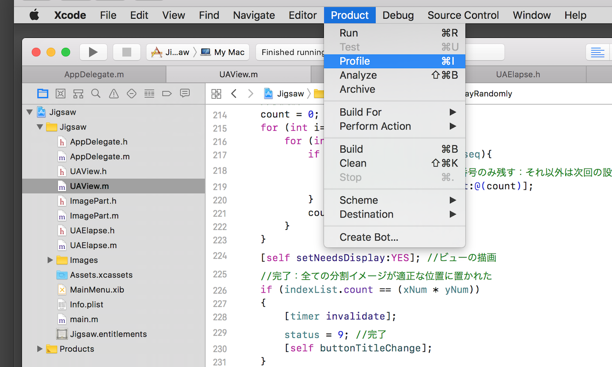

メモリ・リークをを検出する
Xcode の profile を利用すれば、アプリケーションを実行しながらリアルタイムでメモリ・リークを検出することができる。
画像当てクイズアプリケーションは、Core Foundation の一種である Core Graphics 機能を利用している。Core Foundation のメモリ管理は、Cocoa と同じように参照カウンタ方式を採用しているが、ARC対象外なので、参照カウンタの操作は自前で行う必要がある。最初はここがほとんど分かってなかった。
最初に作成したアプリケーションを profile で解析したところ、かなり深刻なメモリ・リークがあることがわかった。
profileの出力結果
青い縦線グラフがメモリの使用量。横軸の時間とともに右肩上がりに増加している。赤いバツ印がメモリリークが発生したタイミング。下段にはメモリーをリークしているオブジェクトの一覧を表示する。（アプリケーションプログラムのどれに対応しているのかわからなくて困る。）
対応策
画像イメージの分割処理は、配列matrixの要素であるpartImage変数にCGImageRefオブジェクトを代入している。これは Core Foundation object なので、オブジェクトが必要でなくなったとき、メモリの解放（retainカウントの減少）を行わなければならない。
画像イメージの分割処理は、ランダムに配置した画像が正しい配置になるまで配列matrixへのオブジェクトの上書きが繰り返し行われる。
このとき、以前に代入されている古いオブジェクトを解放しないと、メモリリークが累積的に積み上がってしまう。対応として、配列matrixへのオブジェクトの代入の直前に、CGImageRelease( )関数により以前のオブジェクトを解放するようにする。
対応後の profile の出力結果
メモリの使用量の推移は一定。メモリ・リークを起こしているオブジェクトはみられない。
profileの起動方法
Xcodeメニュー → Product → Profileを開く。

トレースする要素を選択するフォームが表示される。今回はメモリ・リークのチェックなので Leaks を選ぶ。
instrmentsアプリケーションが起動し、トレースデータを表示するフォームが表示される。
上段左の項目（Allocation, Leaks,...）をクリックすると、下段の出力エリアに表示される詳細情報を切り替えることができる。
左上の赤丸ボタンをクリックすれば、Xcode上のアプリケーションが自動的に起動する。Profileのトレースが始まり、選択した項目の情報をリアルタイムに取得しフォーム上に表示する。
実行中はボタンは黒い四角の変わり、これをクリックするとトレースが終了し、アプリケーションも終了する。
右上の追加ボタン（+）をクリックすれば追加のトレース項目を選ぶことができる。
トレース結果をファイル（.trace）に保存することができる。また、トレース項目を選択しただけの初期状態をファイル（.tracetemplate）に保存することもできる。いずれのファイルも開くとinstrmentsアプリケーショが起動する。
トレース要素の種類や内容についてはほとんどわからないが、追々勉強していければと。
Xcode Analyzerでメモリ・リークの場所を探す
メモリ・リークが発生していることがわかっても、それがどこであるか特定するのはかなり難しい。ひとつの有効な方法として、Xcode Analyzeの利用がある。
Analizeはコードを分析し、コンパイルには問題ない（エラーや警告がない）が、実行時に問題が発生する可能性がある不適切コードを理由とともに表示してくれる。特にメモリ・リークの可能性については、念入りに分析しているようにみえる。潜在的なメモリ・リークの発生箇所の特定には、まずAnalizeを実行してみること。
Analizeを実行するには、プロジェクトのビルドでAnalize付きのビルドを行う。（Xcodeメニュー → Product → Analyze）
アプリケーションでメモリ・リークの対応をする前のコードで Analyzeを実行した結果。コードを追いながら、ここでメモリ・リークが発生するよと教えてくれる。
メモリ・リークを指摘した箇所のメッセージ
ところで、メモリ・リークの対応をした後のAnalizeでも次のような指摘を受ける。
「インクリメントしていないオブジェクトをデクリメントしようとした」という意味だと思うが、なぜこれが出るのか、理解に苦しんでいる。とりあえず、メモリ・リークは解決して動いているので、放っておく。